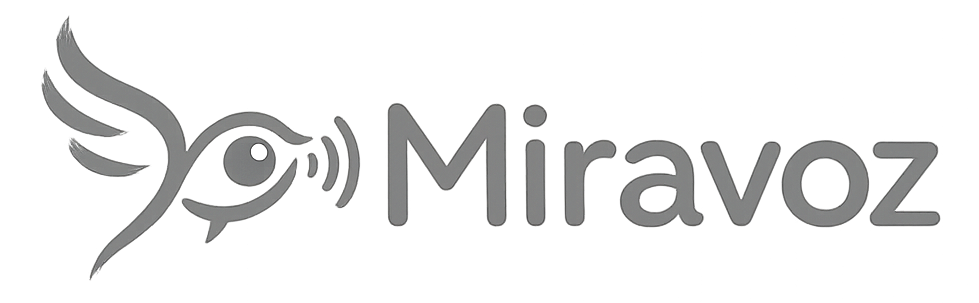

Soporta formato .grd y .obz
Ingresa tu correo registrado para recibir un código de acceso seguro.
Ingresa el código de 6 dígitos enviado a
Verificando sesión...
Acá aparecen los demás tableros de este archivo. Si todavía no hay otros, usá "➕ Crear tablero nuevo…".
Pictogramas: Sergio Palao / ARASAAC (CC BY-NC-SA), Gobierno de Aragón.
Define cuánto tiempo debes mirar una celda para activarla.
El barrido resalta las opciones una por una; se selecciona con el pulsador, la barra espaciadora o tocando la pantalla.